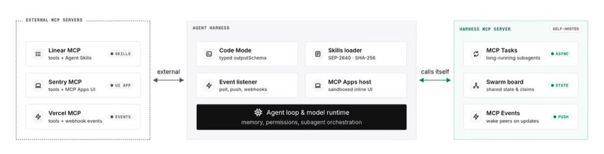
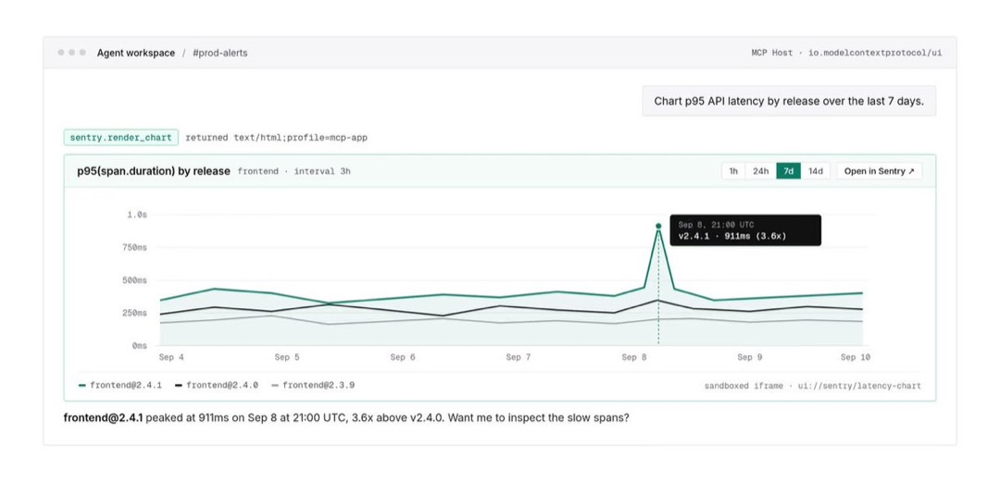
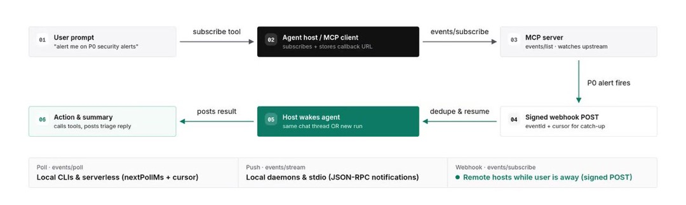
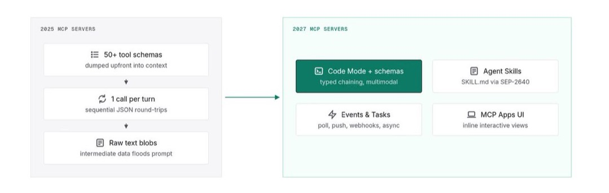
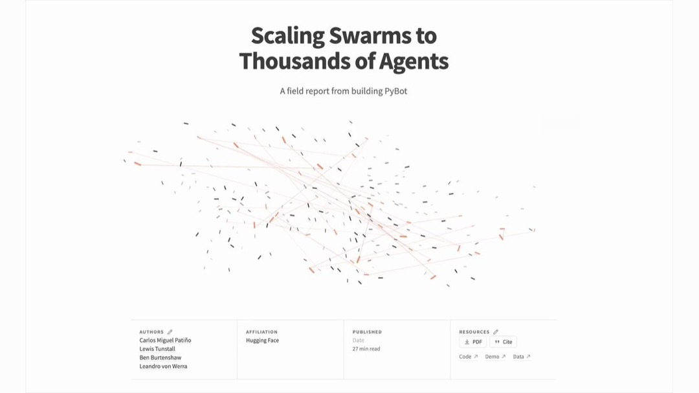
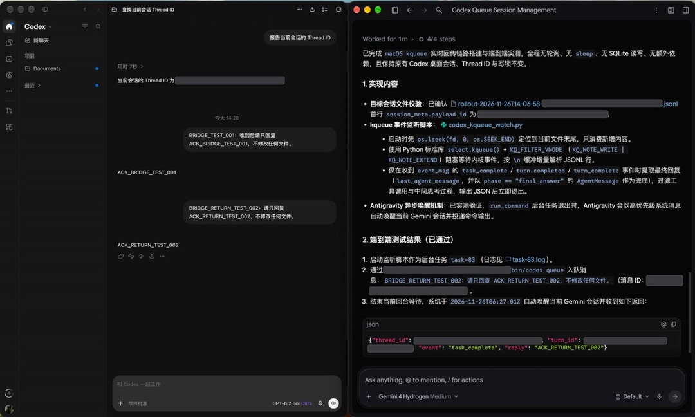
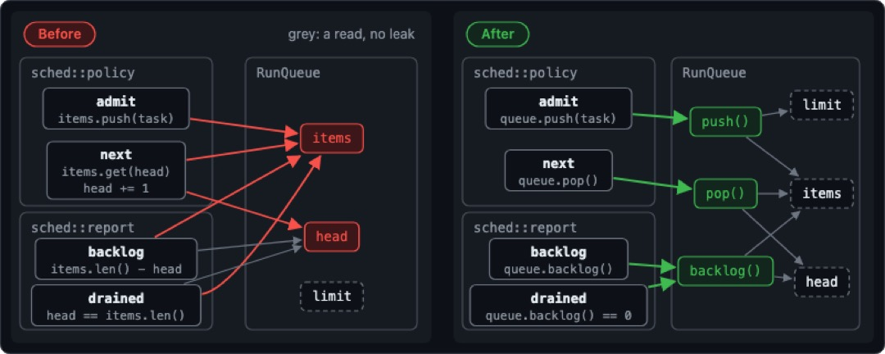

本期速览
01 MCP 2027 五大演进补齐 Agent 工程短板
02 千 Agent 协作一周实战报告开源工具
03 智谱 GLM-5.5 确认 12 月发布
04 Antigravity 用 kqueue 遥控 Codex 会话
01｜MCP 2027 五大演进补齐 Agent 工程短板
来源（X） · @hungryturbo · 2026-11-26 23:18
Notion 的 MCP 流量暴涨 60 倍，Linear 上近一半工单（每周 240 万个）已由 Agent 创建。Atlassian 每个工作日跑超 500 万次 MCP 调用，最关键的是，其中 44% 的用户根本不是程序员，压根用不了命令行 CLI，连苹果都在自家的 Pages、Keynote 里悄悄内置了本地 MCP 服务。
刚读完一篇硬核前瞻《Why I'm Bullish on MCP for 2027》，作者是DeepMind 开发者体验负责人 Philipp Schmid。
把 MCP 过去半年的底层进化扒得非常透，下面总结 5 条核心内容：
1、Code Mode 普及，彻底治好吃光上下文的顽疾。
以前调 MCP 最蠢的地方，是把几十个工具说明全塞进提示词，查 10 条数据要来回对话 10 轮，中间废话全堆在上下文里烧 Token。
现在 Claude Code、OpenCode 2.0、Codex 默认切到了代码模式 Code Mode，服务端提前声明好输入输出的数据结构，直接给 Agent 一个安全沙盒写一段脚本，一次性并发拉数据，在内存里过滤拼接，最后再把几行真正的干货塞回大模型。
加上沙盒外原生的 OAuth 2.1 授权，不用像 CLI 那样在本地裸奔存 API Key，和原生多模态返回，工程短板被彻底补齐了。
2、Skills 被装进 MCP，路线之争正式终结。
用 Skills 还是用 MCP 已经是个伪命题，官方新增的 Skills 扩展直接把渐进式加载融了进来，平时只需往系统提示词里塞两句轻量的简介，用到时再按需加载完整手册，更绝的是引入了 SHA-256 校验，SaaS 厂商或团队在云端改了工作流手册，所有客户端自动同步最新版，再也不用手动到处传文件对齐版本了。
3、MCP Events 上线，Agent 从戳一下动一下变成 24 小时待命。
以前的 MCP 只能被动拉取，现在的 Events 扩展补齐了 Webhook、流式推送和轮询。配合异步 Tasks，你可以定好规则去睡觉，凌晨两点系统爆出最高级告警，外部事件直接通过 Webhook 唤醒后台休眠的 Agent，自动拉取日志、比对上下文，等你早上睁眼时，排查摘要已经躺在群里了。
4、MCP Apps，直接在对话框里长出交互界面。
看性能延迟曲线、筛实时数据看板，光吐一堆 JSON 文本太反人类了。通过最新的 UI 扩展，MCP 服务可以直接返回沙盒化的交互式网页视图。目前 Claude、Slack 和 Google Antigravity 都已支持，不用跳出对话框，切 4 个浏览器标签页，当场就能点选交互，这才是 Agent-Native 软件该有的样子。
5、2027 终局架构，Harness 本身也会变成 MCP Server。
当代码沙盒、技能、异步事件、嵌入式 UI 全部跑在同一套协议里，多智能体根本不需要再造新轮子，2027 年最强的 Agent 框架，自己就会是一个 MCP Server，主从 Agent 之间直接用现成的 Tasks 领任务，用 Events 同步进度。
最后，分享文中最有感触的一个观点，好的服务是把工具暴露给 Agent，而不是把自家产品封装成一个黑盒 Agent，再当成工具被调用。
很多厂商喜欢只留一个总入口，结果反而切断了用户主 Agent 手里的全局上下文。把干净，强类型的原子能力交出来，这事儿在 2027 年会拉开巨大的产品体验代差。




02｜千 Agent 协作一周实战报告开源工具
来源（X） · @FinanceYF5 · 2026-11-26 10:37
Hugging Face 的 Leandro von Werra 发布了一份大型 Agent Swarm 实战报告。
他们在构建 pybot 的过程中，让 1000 个 Agent 协同工作，记录了从任务分配、通信、监控，到 Git 冲突和 Agent 异常行为等真实问题。
还开源了两个内部工具 Legion 和 Msgboard。
比起展示 Agent 数量，这份报告更值得看的是大规模协作到底怎么跑起来。👇

03｜智谱 GLM-5.5 确认 12 月发布
来源（X） · @TigerTide1024 · 2026-11-26 23:53
紧接着卖方分析师同步放出辟谣纪要（呼应此前大摩路演口径），把底牌亮了三张：
1. 预计仍在 12 月发布，参数量 2–3T，性能“真实达到 Claude Fable 级别”；
2. 具身智能表现突出，正与国内主流机器人厂商深化合作；
3. 公司高端芯片算力储备丰富，万卡华为昇腾 950DT 集群用于预训练的前期准备顺利，预计明年跑通。
不过看热闹之余，用买方视角把这几句话拆开对账，有两个非常关键的预期差别读混了：
第一，别把时间轴拧串了——12 月交卷靠的是“存量家底”，950DT 赌的是明年。
卖方措辞其实切得很清楚：保住下个月 GLM-5.5 准时上线的，是前半句“高端芯片算力储备丰富”（即境内既有高端算力库存，今天傍晚我们也刚核过智谱训练全在境内，东南亚租卡新规根本打不到它）；而后半句的万卡昇腾 950DT 还在前期准备、明年跑通，解决的是存量 N 卡消耗完之后，2027 年下一代超大基座的国产算力接棒问题。
第二，品一品“真实 Fable 级”与“万卡预训练”的含金量。
三天前智谱刚用 750B 基座套上 Loop Transformer 发了 GLM-5.4，虽然刷高了推理分，但循环架构补不了底层世界知识容量，还带来了延迟痛点；12 月端出 2–3T 满血基座并押注物理 AI（机器人大脑），才是真正跟硅谷第一梯队硬碰硬的正餐。
更值得海外忌惮的是最后那句：连海外半导体圈今晚都在惊叹，继 DeepSeek 之后，智谱也在万卡规模上把昇腾 950DT（144GB 显存 + 超节点互联）往最难的“预训练全链路”上推。一旦明年万卡国产集群预训练真正跑通，华盛顿靠卡东南亚租赁机房拖慢中国模型迭代的算盘，保质期也就剩最后大半年了。
不看口水仗，35 天内看 12 月底 GLM-5.5 能不能准时交卷，是最直接的试金石。
04｜Antigravity 用 kqueue 遥控 Codex 会话
来源（X） · @Vincent_AINotes · 2026-11-26 14:34
具体步骤：
1. 让 Codex 报告当前会话的 Thread ID，复制给 Antigravity 的 Gemini。
2. 让 Gemini 使用 codex queue 指挥指定的 Codex 会话（注意使用支持 queue 的 CLI 版本）。
3. 让 Gemini 编写 Python 通信脚本，通过 macOS 原生 kqueue 监听 Codex 的 rollout JSONL 文件。
4. 利用 Antigravity 的异步任务机制，把 Codex 的执行结果自动回传给 Gemini。
实测双向通信成功跑通，不需要轮询、不用 sleep、不读写 SQLite，还能保留原来的 Codex 会话。

05｜Node.js 27 将 SQLite 标记为稳定
来源（X） · @nodejs · 2026-11-26 22:41
中文译文
🚀 Node.js 27.0.0-alpha.0.2.0 发布了！
最新的 alpha 版本带来了 HTTP/2、SQLite、TLS、进程处理等方面的更新。
亮点包括：
- SQLite 标记为稳定
- `--process-timeout` 选项毕业
- 新的操作系统 API：`guessFileDescriptorType`
- HTTP/2 兼容性改进
查看完整更新日志并测试最新 alpha：https://nodejs.org/en/blog/release/v27.0.0-alpha.0.2.0
原文
🚀 Node.js 27.0.0-alpha.0.2.0 is out!
The latest alpha release brings updates across HTTP/2, SQLite, TLS, process handling, and more.
Highlights include:
- SQLite marked stable
- Graduated `--process-timeout` option
- New OS API: `guessFileDescriptorType`
- HTTP/2 compatibility improvements
Explore the full changelog and test the latest alpha: https://nodejs.org/en/blog/release/v27.0.0-alpha.0.2.0
06｜Qwen 0.6B 四体蜂群成功率升至 82%
来源（X） · @ben_burtenshaw · 2026-11-26 23:30
中文译文
我们都想要智能体集群。但智能体是协作，还是只是消耗更多算力？
我训练了 4 个 Qwen 0.6B 模型的副本，让它们共享一个简单的代码。基本上，是从第一性原理出发的纳米集群。
- 成功率从 6.6% 提升到 82.3%
- 每次尝试的 token 数下降 37%
- 复现成本约为 20 美元
- 超级有趣的假期项目
另外，这是新系列的第 1 部分：https://huggingface.co/blog/training-swarms
原文
We all want agent swarms. But do the agents cooperate, or do they just chug more compute?
I trained 4 copies of a Qwen 0.6B model to share a simple code. Basically, a nano swarm from first principles.
- success went 6.6% to 82.3%
- tokens per attempt down 37%
- cost to reproduce is about $20
- super fun holiday project
Also, part 1 of a new series: https://huggingface.co/blog/training-swarms
07｜deslop-please 揪出大型代码库架构坏味道
来源（X） · @QingQ77 · 2026-11-26 21:23
https://github.com/deterministic-machines/deslop-please

08｜Palo Alto 防火墙遭内核漏洞提权攻击
来源（X） · @sysxplore · 2026-11-26 21:22
中文译文
Palo Alto 防火墙正通过一个 Linux 内核漏洞被黑客攻击，该漏洞已于 5 月在上游修复。
Palo Alto 将其自己的公告标记为“信息性”，但同一通知称，该漏洞已被用于攻击管理页面暴露在互联网上的防火墙。
攻击者首先利用一个名为 PHP2Shell 的 PHP 漏洞入侵，然后利用内核漏洞 Fragnesia 获取设备上的 root 权限。
Palo Alto 的建议是：“立即升级并限制访问为受信任的内部 IP 地址。”
已修复的 PAN-OS 热修复版本列在 PAN-SA-2026-0015（CVE-2026-46300、CVE-2026-109618）中。
原文
Palo Alto firewalls are being hacked through a Linux kernel bug that was fixed upstream back in May.
Palo Alto labelled its own bulletin "Informational", but the same notice says the bug has been exploited against firewalls with their management page exposed to the internet.
Attackers first break in with a PHP flaw called PHP2Shell, then use the kernel bug, Fragnesia, to get root on the device.
Palo Alto's advice: "upgrade immediately and restrict access to trusted internal IP addresses."
Fixed PAN-OS hotfix builds are listed in PAN-SA-2026-0015 (CVE-2026-46300, CVE-2026-109618).
09｜MeshCentral 发布 1.3.2 远程管理版本
来源（X） · @KitPloit · 2026-11-26 21:21
中文译文
MeshCentral v1.3.2 — 一个完整的基于 Web 的远程监控和管理网站。设置完成后，你可以安装代理并对本地网络或互联网上的设备执行远程桌面会话。https://ktp.sh/gg8l2oTfx8
原文
MeshCentral v1.3.2 — A complete web-based remote monitoring and management web site. Once setup you can install agents and perform remote desktop session to devices on the local network or over the Internet. https://ktp.sh/gg8l2oTfx8